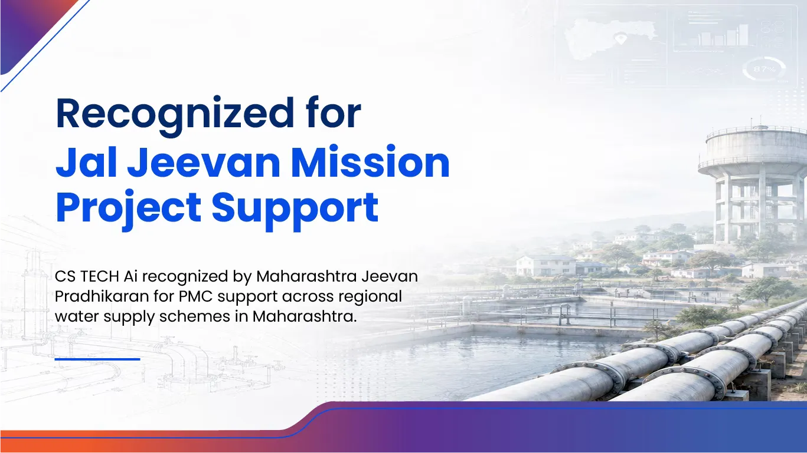

Recognition highlights CS TECH Ai’s project management consultancy contribution across regional water supply schemes in Amravati and Akola districts.

Nagpur, India | 27-May-2026 – CS TECH Ai has been recognized by Maharashtra Jeevan Pradhikaran for its project management consultancy support across multiple Jal Jeevan Mission regional water supply schemes in Maharashtra.
The engagement covered key water infrastructure projects across Amravati and Akola districts, including the 156 Villages Regional Water Supply Scheme across Anjangaon, Daryapur and Bhatkuli talukas; the Bhankheda and 7 Villages Regional Water Supply Scheme; the Talegaon Dashasar Water Supply Scheme; and the Kurum and 2 Villages Regional Tap Water Supply Scheme in Murtizapur taluka.
As Project Management Consultant, CS TECH Ai supported scheme implementation through day-to-day project monitoring, technical coordination, preparation of technical change and additional quantity proposals, contractor bill verification, CPMS / DPMS updates, documentation support, and timely coordination with senior offices and field teams.
The projects required close coordination between engineering teams, contractors, field officials, and government stakeholders to ensure smooth execution and timely progress. CS TECH Ai’s teams contributed across planning support, implementation monitoring, issue resolution, digital reporting, and project-level coordination.
The work reflects CS TECH Ai’s ability to support complex public infrastructure programs where field execution, engineering coordination, documentation, digital monitoring, and stakeholder alignment need to move together. By combining project management consultancy with geospatial and digital project monitoring capabilities, the company helps government agencies improve visibility, maintain execution discipline, and support timely infrastructure delivery.
CS TECH Ai continues to support public infrastructure programs through its integrated capabilities in project management consultancy, geospatial intelligence, digital project monitoring, engineering support, and water infrastructure management. Its work across Jal Jeevan Mission projects reflects the company’s broader commitment to enabling more transparent, efficient, and accountable infrastructure delivery.